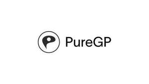

Trade Mark Journal No.2025/043 24 October 2025
UK00004275554 9 October 2025 (35,41,42,44)

- Class 35
- Medical Billing Services for Doctors; Production of Medical Reports; Administrative Services for Medical Referrals; Maintaining Personal Medical History Records and Files; Compilation of Statistical Data relating to Medical Research; Maintaining Files and Records concerning the Medical Condition of Individuals; Advice, Information and Consultancy in relation to the aforesaid Service.
- Class 41
- Education; Training; Medical Education Services; Medical Tuition Services; Medical Teaching and Training; Providing online electronic publications; Publishing of medical publications; Providing electronic publications; Electronic publications (not downloadable); Providing on-line publications; Writing of texts, other than publicity texts; Pilates instruction; Sports coaching; Seminars; Education; Sports information services; Sporting education services; dietary Education Services; Provision of Educational Services relating to Diet; Advice, information and Consultancy in relation to the aforesaid Services.
- Class 42
- Medical research; Medical and Pharmaceutical Research Services; Scientific investigations for medical purposes; Biological research, clinical research and medical research; Non-medical, ultrasound imaging services; X-ray imaging, other than for medical purposes; Technical Consultancy in Relation to Research Services Relating to Foods and Dietary Supplements; Research in the field of Genetic Diseases; Medical Research in the field of Rare Diseases; Scientific Research for Medical Purposes in the area of Cancerous Diseases; Advice, Information and Consultancy in relation to the aforesaid Services.
- Class 44
- Medical clinics; Medical information; Medical counselling; Medical Assistance consultancy provided by Doctors and others specialised medical personnel; Medical consultation; Medical equipment rental; Medical treatment services; Medical advisory services; Issuing of medical reports; Health clinic services (medical); Health resort services (medical); Medical examination of individuals; Medical health assessment services; Compilation of medical reports; Monitoring of Patients; Providing information to Patients in the field of Administering Medications; Medical Evaluation Services for Patients receiving Rehabilitation for purposes of guiding treatment and assessing effectiveness; Provision of medical information; Performing Diagnosis of Diseases; Drug Screening for Medical Diagnosis and Treatment; Pathological Examination for Medical Diagnosis and Treatment; Medical Analysis Services for Cancer Diagnosis and Prognosis; Medical Analysis for the Diagnosis and treatment of persons; Hospitals; Hospital Services; Private Hospital Services; Medical Treatments Services provided by Clinics and Hospitals; Physiotherapy; Dietary and nutritional guidance; Medical ultrasound imaging services; Physiotherapy; Physiotherapy Services; Electro Therapy Services for Physiotherapy; Osteopathy; Health Care Relating to Osteopathy; Massage; Massage Services; Sports Massage; Deep Tissue Massage; Information Relating to Massage; Consultation Services Relating to Massage; Health Care Relating to Therapeutic Massage; Dietary Guidance; Dietary Advice; Diet Planning and Supervision; Dietary and Nutritional Advice; Nutrition and Dietetic Consultancy; Providing Information relating to Dietary and Nutritional Supplements; Providing Information relating to Dietary and Nutritional Guidance; Performing Diagnosis of Diseases; Advice, Information and Consultancy in relation to the aforesaid Services.
Pure Sports Medicine Limited
Representative: Briffa